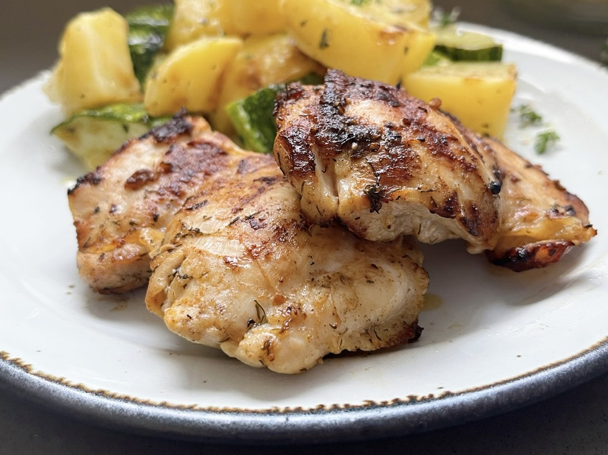

Grilled Dill Pickel Chicken Thighs

Description
The next time you reach for that last pickle in the jar, hang on to the
juice. Chicken marinated in pickle juice makes some mighty tender grilled
chicken. The pickle flavor does not overpower, but you do need to like
dill pickles to enjoy this.
Ingredients
- 4 each skinless chicken thighs
- 1 ½ cups dill pickle juice
- 1 tablespoon olive oil
- ½ teaspoon seasoned salt
- ½ teaspoon paprika
- ½ teaspoon freeze-dried dill
- ¼ teaspoon ground black pepper
Steps
-
Place chicken thighs in a gallon-sized resealable bag. Pour pickle juice
over the chicken. Seal bag and refrigerate for 4 hours.
-
Preheat an outdoor grill for medium-high heat and lightly oil the grate.
-
Whisk olive oil, seasoned salt, paprika, dill, and pepper together.
Remove chicken from pickle juice; discard the juice. Brush all sides of
the chicken with the seasoned oil.
-
Grill chicken for 6 minutes. Flip and grill until no longer pink in the
center, about 6 minutes more.